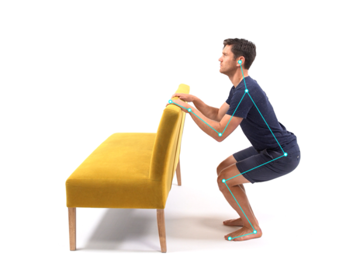

Advancing Healthcare through Pose Estimation Technology
In the evolving landscape of medical technology, my startup has been at the forefront of harnessing the potential of an emerging AI known as human pose estimation. Our journey began three years ago, aimed at revolutionising healthcare through innovative solutions. With over £200k in non-dilutive R&D funding and eight successful collaborative R&D projects under our belt, we've made significant strides in this field.
Our path to success was paved by forming strategic partnerships with universities, NHS, private companies, and support from the Welsh Government, Innovate UK, and The Alan Turing Institute. Despite my background primarily in sports and operations management, and with no prior experience in healthcare or AI, our progress has been remarkable, a testament to the power of collaboration.
One of our notable projects involved working with Cardiff Metropolitan University's School of Technologies. This collaboration, facilitated by the Welsh Government’s SMART Partnership programme, allowed us to deeply explore human pose estimation. We developed several models optimised for different uses, achieving a processing speed of at least 30 frames per second. This breakthrough enabled us to validate our joint angle predictions against lab-based motion capture systems, proving our technology's reliability and accuracy.
This project not only leveraged our understanding of pose estimation technology but also underscored its potential in healthcare, especially in movement assessment where traditional methods are either rudimentary or prohibitively expensive.